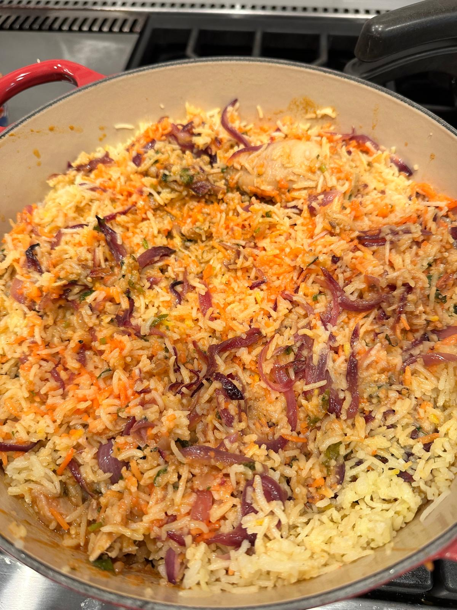

Mutton Biryani is one of the most flavorful and aromatic dishes that brings together tender mutton, fragrant basmati rice, and a blend of rich spices. This dish has deep roots in South Asian and Middle Eastern cuisine and is often considered the highlight of celebratory meals. The slow cooking process allows the meat to absorb the intense flavors of saffron, caramelized onions, and a medley of spices, making each bite incredibly satisfying.
The key to a perfect mutton biryani lies in marinating the meat well, cooking the rice to the right texture, and layering everything to allow the flavors to merge beautifully. This biryani is a perfect example of a one-pot meal that is both hearty and delicious. Whether you're making it for a family gathering or just indulging in a personal cooking adventure, this dish is sure to impress.
